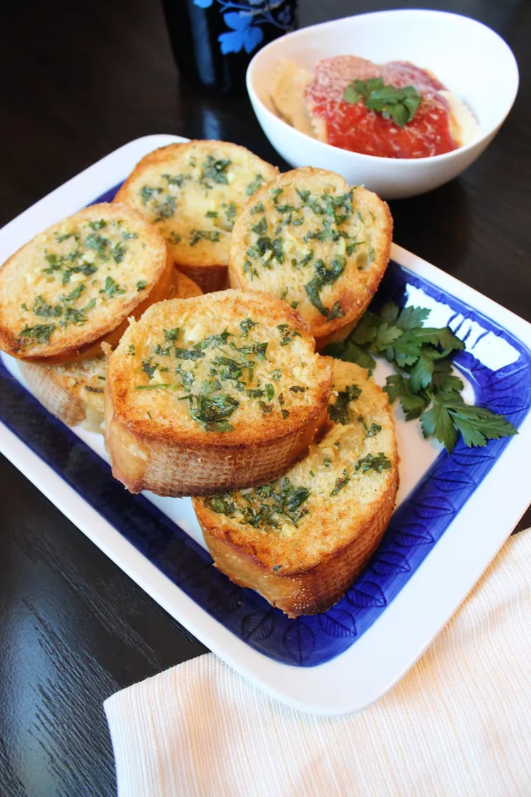

Homemade Garlic Bread Recipes

Homemade Garlic Bread
- Prep Time:
10 mins
- Cook Time:
25 mins
- Total Time:
35 mins
- Servings:
8
- Yield:
1 loaf
Ingredients
- ½ cup butter, softened
- 3 tablespoons olive oil
- 4 cloves garlic, minced
- 1 tablespoon garlic powder
- 1 tablespoon chopped fresh parsley
- ½ teaspoon salt
- 1 loaf French bread
Directions
- Preheat the oven to 400 degrees F (200 degrees C). Line a baking sheet with aluminum foil.
- Mix butter, olive oil, minced garlic, garlic powder, parsley, and salt in a bowl until well combined.
- Cut bread loaf into 1-inch slices and spread garlic mixture over each slice. Place each on a baking sheet. Wrap with additional aluminum foil.
- Bake in the preheated oven until bread is crispy and heated through, 25 to 30 minutes.